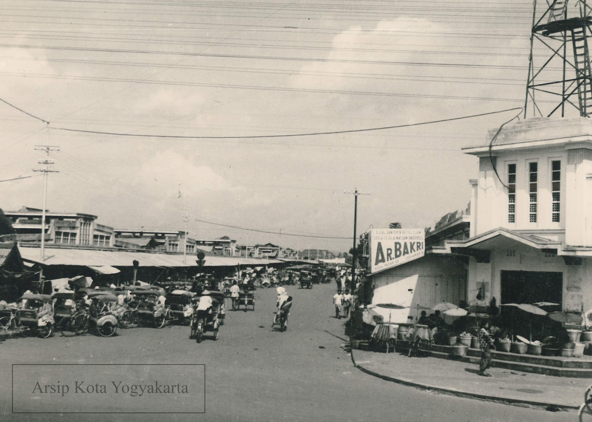

Sejarah Pasar
|  |
Tahun 1925[3], Raja Kasultanan Ngayogyakarta Hadiningrat Sri Sultan HB XI mendirikan bangunan pasar permanen dan pada saat peresmian disematkan nama Pasar Beringharjo. Nama tersebut berawal dari lokasi didirikannya pasar beringharjo merupakah wilayah yang memiliki banyak pohon beringin. Menurut filosofinya pohon beringin diharapkan dapat memberikan kesejahteraan bagi warga Yogyakarta dari kata bering yang bermakna hutan beringin dan harjo yang bermakna kesejahteraan. Pasar Beringharjo sudah menjadi salah satu ciri khas Kota Yogyakarta sejak zaman pemerintahaan Hindia Belanda. Baca lebih lanjut.. |
Kios
- Kios yang ada di Pasar Beringharjo
- Pak Djenggot, dengan menu:
- Bakso Urat
- Bakso Kuah
- Mangkok Bakso
- Sate Kere
- Sate Kulit
- Sate Bakar
- Tusuk Sate
Diskon Belanja
Pada tahun 2022, demi memperingati tahun yang bertambah. Pasar Beringharjo melakukan terobosan dengan memberikan diskon pada semua Kios.
| Jam 08:00-09:59 | Jam 10:00-13:59 | Jam 14:00-17:59 | Jam 18:00-07:59 | |
| Senin-Selasa | 1% | 15% | 20% | 50% |
| Rabu-Kamis | 13% | |||
| Jumat | 19% | |||
| Sabtu-Minggu | 0% | |||